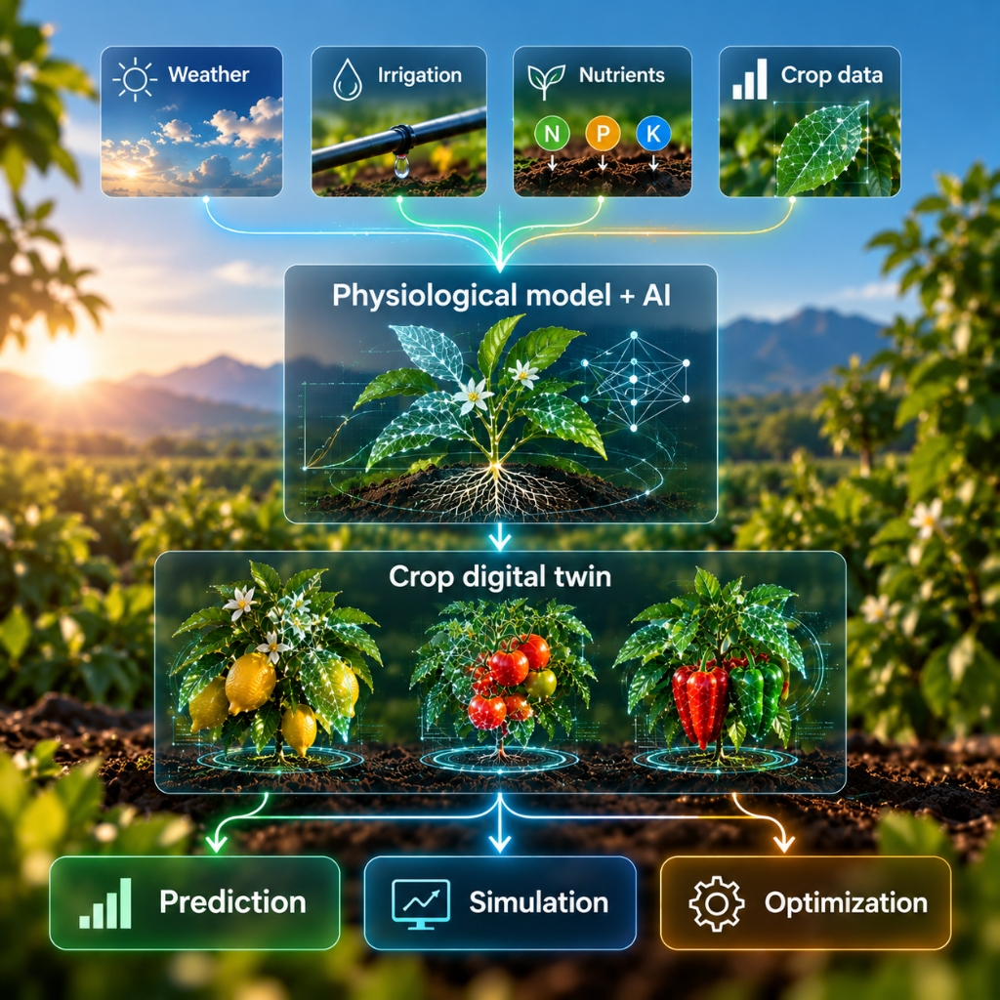
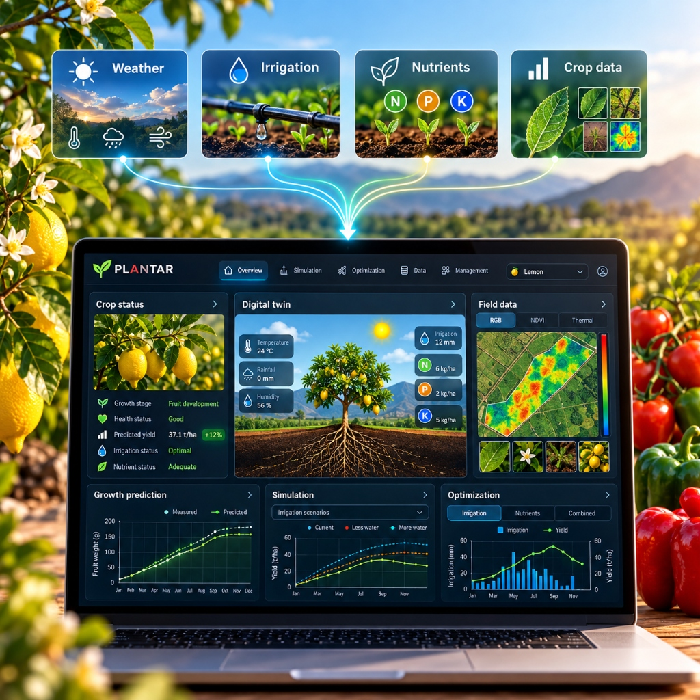
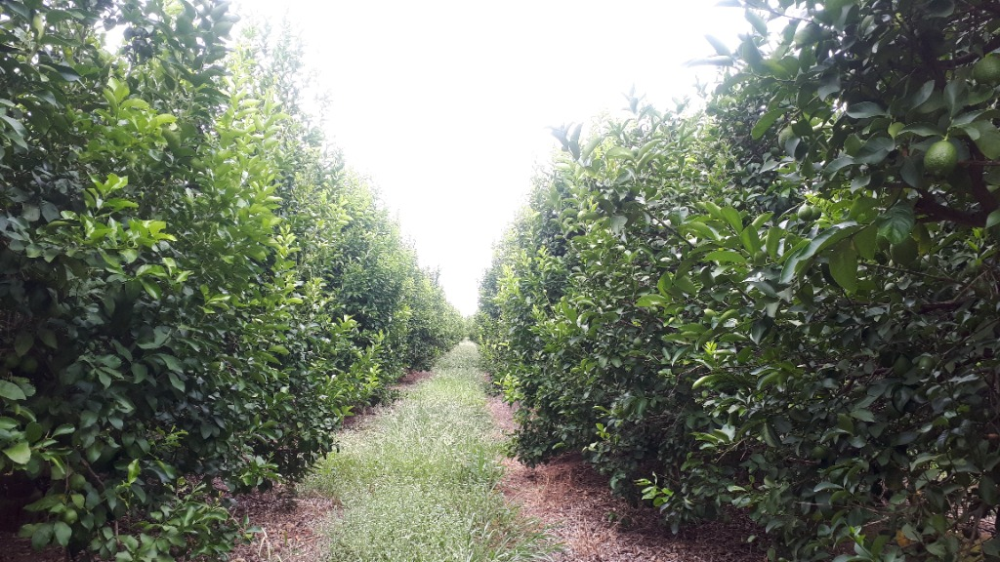

ALAIVE · PFLANZENINTELLIGENZ
Die Mechanismen
des Lebens
entschlüsseln.
KI-gestützte physiologische Modelle, die biologische Komplexität in nutzbare Vorhersagen verwandeln.

DIGITALE FLORA
Fortschrittliche Pflanzenmodelle für eine sich wandelnde Welt.
Wir entwickeln Fortschrittliche Pflanzenmodelle, hochpräzise digitale Zwillinge, die darauf ausgelegt sind, die physiologischen Komplexitäten verschiedener landwirtschaftlicher Arten zu modellieren.
Durch die Integration von Echtzeit-Umweltdaten mit fortschrittlicher Computer Vision sagen unsere Systeme Ertrag und Gesundheitsmetriken mit beispielloser Genauigkeit voraus.
Diese Vorhersagefähigkeiten sind entscheidend für die Optimierung des Ertrags, während gleichzeitig Betriebskosten und Umweltauswirkungen minimiert werden.
DAS KOMMERZIELLE PRODUKT
PLANTAR
Der physiologische digitale Zwilling für Ihre Kulturpflanze.

Modellieren Sie die Pflanze, nicht nur das Feld.
PLANTAR verknüpft Pflanzenbeobachtungen und Umweltbedingungen mit einem physiologischen Modell, um das Wachstum zu simulieren und Alternativszenarien durchzuspielen.
Wie sich Umweltbedingungen auf die Pflanzenentwicklung auswirken.
Wachstum, Wasserbedarf, Fruchtentwicklung und Hitzestress.
Mögliche Erträge vor Anpassung der Anbaubedingungen.
MODELLE ERKUNDEN
Pflanzenintelligenz, Kultur für Kultur.
Wählen Sie ein Modell und entdecken Sie, wie physiologische digitale Zwillinge die Produktion optimieren.
Citrus Limon
Präzise Ertragsvorhersage · Wasserbedarf · Fruchtwachstum
Zitronen-Modell erkunden → PLANTAR · GARTENBAUSolanaceae
Präzise Gewächshausanalyse · Umweltdynamik · Ertrag
Solanaceae erkunden → PLANTAR · FORSCHUNGNicotiana
Biomassen-Dynamik · Vegetatives Wachstum · Lichtoptimierung
Nicotiana erkunden →WAS KANN MODELLIERT WERDEN?
TECHNOLOGIE
KI mit biologischem Fundament.
Wir verbinden künstliche Intelligenz, computergestützte Bildverarbeitung und physiologische Modellierung zur Abbildung komplexer Biosysteme.

ANWENDUNGSBEISPIEL Kommerzielle ZitrusproduktionANWENDUNGSBEISPIEL
Aus der Forschung in die kommerzielle Zitrusproduktion.
PLANTAR wurde erfolgreich im kommerziellen Zitrusanbau unter Einbindung realer Felddaten und hochaufgelöster Umweltmessungen erprobt. Nutzen Sie unsere Plattform für verlässliche Prognosen und gezielte Kulturführung.
Anwendung für Ihre Kultur anfragen →PILOTPROJEKT STARTEN
Möchten Sie eine Kulturpflanze modellieren?
Teilen Sie uns mit, was Sie anbauen und welche Parameter Sie vorhersagen oder optimieren möchten.